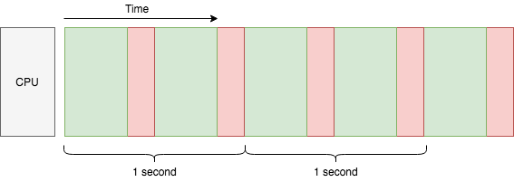

异步编程基础¶
一个经典场景¶
假如现在我们想要去创建自己的搜索引擎，为了创建索引数据库，家境贫寒的我们使用了一台单核电脑去爬取网页（I/O型操作），然后再将这些网页内容进行处理（计算型操作）。这个过程如下图所示：

由于我们有很多网页去要去进行爬取和处理，所以我们只能将上面的过程一个个顺序执行：
假设每个过程耗时一样，每 1 秒可以进行 2 次这样的处理，那么我可以称我们这台单核的机器的吞吐量为 2 任务/秒。如何提升当前系统的吞吐量？一个比较简单的做法就是增加 CPU 的核心数量：

如上图所示，我们超级加倍了 CPU 资源后，在未达到网络瓶颈的情况下，吞吐量也轻松翻倍，达到了 4 任务/秒。但是，我们还可以针对单个 CPU 核心增加吞吐量吗？当然可以，使用多线程：

桥多麻袋！即便是有用了 2 个线程，我们的单核机器在 2 秒内勉勉强强才完成了 6 个任务，吞吐量也只有 2.7 任务/秒，远比 2 核心机器的 4 任务/秒的吞吐量少诶，所以所线程有啥问题呢？一起康康上面的图：
图片上黄色色块代表额外的时间开销（啥是额外时间？马上就会提到）
绿绿的色块（代表爬取网页任务）在上图所示的两个线程上可以重叠，代表可以被多个线程一起执行，但是
非绿色的色块却不能彼此重叠，即不能被多线程同时一起执行。
黄色色块代表被上下文切换所消耗的时间，简单理解，就是在单核 CPU 并发处理时在多个线程中切换所消耗的时间。单核 CPU 只能在同一时间处理一件事（假设这个世界上类似超线程技术还没有被发明出来），所以为了在单核 CPU 上同时处理多线程，CPU 必须将自己的时间分成片，并且在这些被分好的时间片内处理一点点当前线程的任务，然后在下一个时间片切换到其他线程继续处理。所以刚才所说的黄色色块所消耗的额外时间实际上就是在这些线程直接来回切换所消耗的时间。虽然上图的黄色色块看上去好像占了好大一块，但实际上没这么夸张，这里是为了方便理解故意搞了个大新闻。
桥多麻袋！！还没完！既然绿色的色块可以在多线程图上重合，是不是代表这 CPU 同时处理了爬取网页的操作呢？答案是 NO！在绿色的色块覆盖的时间内，CPU 没有处理任何事情，这是因为它正在等待 HTTP 的响应（I/O 操作）。这也是使用了多线程后吞吐量还是提高到了 2.7 任务/秒，而不是降低到 1.7 任务/秒的原因。你可能会想尝试用单核 CPU 搞个多线程去处理计算密集型的任务，但这肯定没有任何提高，甚至会适合其反，正如上图所示的红色色块一样（代表处理爬取到信息的任务；实际中的上下文切换可能更加频繁一些），只能说这些任务看上去好像是同时在运行一样，但是这些任务交替执行所消耗的时间甚至比一个个的顺序执行所消耗的时间更多。这也就是为什么当前的事例中只能被称为并发，而不是并行。
你也许还会想，每多增加一个线程吞吐量可能还是会有所提升，直到因为上下文切换所消耗的时间过多而影响了系统的吞吐量，这里还没有算上每一个新的线程所占用的系统内存。通常我们不会在实际生产中在单核的 CPU 上去跑它个几百几千个线程。那么问题来了，有可能在单核 CPU 上并发处理数万个 I/O 密集型的任务吗？这就是著名的 C10k 问题，而解决这个问题的办法，正是异步 I/O：

注解
需要注意的是，异步 I/O 和协程是两个概念，但是他们经常被一起提及。在这里，为了简单起见，我们将只讲协程。
看上去很奈斯嘛！现在的吞吐量是 3.7 任务/秒，已经快达到我们买不起的双核 CPU 机器的 4 任务/秒吞吐量了！虽然这些图都不是使用真是的数据，但是相比系统级别的线程而言，协程真的在上下文切换上开销更加少并且占用更少的内存，这也让协程成为解决 C10K 问题的理想选择，
协作式多任务处理¶
说了半天，协程到底是什么？
在上一个图中，你可能已经注意到了它和之前一张图片不一样的地方：在同一条线程内，绿色的色块彼此重叠了。这正是因为我们在上图中使用了异步 I/O 编程，而之前的图片中我们使用的是阻塞式的 I/O 编程。顾名思义，阻塞式的 I/O 编程会在代码执行到进行 I/O 操作时等待 I/O 结果返回，从而阻塞当前线程。因此，每条线程中同时只可能执行一个阻塞式的 I/O 操作。为了能够在阻塞式的 I/O 编程中达到并发，要么使用多线程，要么就使用多进程。对比之下，异步 I/O 允许在一条线程中同时进行数千（甚至更多）次 I/O 并发操作，此时在同一线程内，每一次的 I/O 操作只会阻塞当前协程而不是整个线程。和多线程一样，协程可以完成 I/O 的并发，但它仅仅只发生在一条线程内。
在操作系统中，线程是以抢占式多任务处理的方式进行的。举个栗子，还记得我们之前的图表吗，我们只有一个 CPU 核心，当两个线程准备处理各自爬取到的第一个网页的内容，此时第一个线程先执行，但是还没等线程一执行完毕，操作系统就打断了线程一转而去执行线程二，但是线程一的活还没干完啊，所以还要等到系统挂起线程二重新再执行线程一。如果线程内需要处理的工作很复杂的话，这里面的切换次数那就多了。但也正因为有这样的切换，每个线程才有可能去执行它当前的内容。请阅读下文，并回答文中使用了哪一种修辞手法：
Thread 1: I wanna run!
OS: Okay, here you go...
Thread 2: I wanna run!
OS: Urh, alright one sec ... Thread 1, hold on for a while!
Thread 1: Well I'm not done yet, but you are the boss.
OS: It won't be long. Thread 2 it's your turn now.
Thread 2: Yay! (&%#$@..+*&#)
Thread 1: Can I run now?
OS: Just a moment please ... Thread 2, give it a break!
Thread 2: Alright ... but I really need the CPU.
OS: You'll have it later. Thread 1, hurry up!
而协程，恰恰相反，它是在某个事件管家的帮助下合作完成任务的。这个事件管家同样也和协程在同一条线程内。但是和通过系统调度完成强制切换的线程不一样，事件管家只会在协程自我挂起的时候完成协程的切换。上面说了线程是抢占式地多任务，因此它是只要自己不阻塞了就想被运行，但是协程相对佛系，一切由事件管家调度，来决定哪一条协程可以被运行。当一条执行中的协程突然遇到一个需要等待的事件（比如HTTP响应），它会将控制权交换给事件管家然后默默等待事件完成，此时事件管家就去找去找另外一条已经得到事件响应的协程，然后将控制权交给它，让它执行。这种并发模式被称为`协作式多任务处理<https://en.wikipedia.org/wiki/Cooperative_multitasking>`_，如果换成拟人的修辞手法，他们大概是这样交流的：
Coroutine 1: Let me know when event A arrives. I'm done here before that.
Event manager: Okay. What about you, coroutine 2?
Coroutine 2: Um I've got nothing to do here before event B.
Event manager: Cool, I'll be watching.
Event manager: (after a while) Hey coroutine 1, event A is here!
Coroutine 1: Awesome! Let me see ... looks good, but I need event C now.
Event manager: Very well. Seems event B arrived just now, coroutine 2?
Coroutine 2: Oh wonderful! Let me store it in a file ... There! I'm all done.
Event manager: Sweet! Since there's no sign of event C yet, I'll sleep for a while.
(silence)
Event manager: Damn, event C timed out!
Coroutine 1: Arrrrh gotta kill myself with an exception :S
Event manager: Up to you :/
协程遇到IO事件将会等待并挂起自己当前的任务，但它不能被其他外部因素打断。所以当有很多协程的时候，并发就是由这些协程时不时地遇到事件时挂起来实现的。当然，如果你写了一个永远不会挂起的协程，它也不会允许任何并发的产生，因为其他的协程根本没有机会去运行。另外一方面，由于不会有多个协程同时运行，我们也大可不必我们所写的担心代码会搞乱一些共享的资源。现在你能理解上图中协程和线程红色色块堆叠方式不一样的原因了吧。
小技巧
在Python中，async def 用来声明协程，await 用来将协程加入一个事件循环（即上文提到的将控制权交给事件管家）。
异步I/O的利弊¶
异步I/O能够在同一条线程里面完成成千上万次的并发I/O操作。这样就能够节省多线程带来的CPU上下文切换时间以及内存。因此，在面临I/O密集型的任务时，异步I/O能够有效地使用CPU和内存资源，以达到相对较高的吞吐量。
并且，在Python中可以轻松自然地编写基于协程的代码。如果业务逻辑十分复杂，基于协程完成异步I/O的代码读起来也是行云流水。
但是，对于一个任务来说，异步I/O也会降低吞吐量。比如，调用函数 recv() ，它仅仅只是阻塞地等待返回值。而如果想要它变为异步，则必须要注册读事件，等待事件循环，尝试调用 ``recv()``函数，重复以上步骤，直到结果真正返回，然后再进行回调。所以用了协程之后，整个框架的开销实际上更大了。不过幸好有了像uvloop这样优秀的事件管理模块，上述的开销已经被极大地减少。即使是这样，和阻塞式的I/O相比，总提上开销还是大了些。
想要去为异步I/O的程序计算耗时也是比较费劲的，由于协作的特性，程序的可预测性会变差。举个栗子，你可能希望当前的协程暂停1秒钟。但是此时如果另外一个协程得到了控制权，开始运行，结果计算太久，花费了2秒钟，当我们再次回到刚才的协程时，2秒钟已经实实在在地过了，这么来看，sleep(1) 这个操作已经不能理解为暂停1秒，而应该理解为至少暂停1秒。所以，你应该努力做到让那些不使用 await 进行调用、同步执行的代码尽可能快得执行，让协程真正得“合作”起来。但即使你真的做到了让同步代码快速执行，有时程序的运行候难免还是会不如你所愿，所以要时刻记住这种在执行时间上的不确定性，这样才能方便更好地排查问题。
最后，异步编程其实是复杂的。要真正写好异步的代码比想象中的难很多，而且异步的代码比同步的代码更加难以调试。尤其是当整个团队都在处理同一段异步代码时，常常会遇到意想不到的问题。因此，这里给一个比较中肯的建议：仅仅在I/O密集型的高并发场景中谨慎使用异步I/O。不是说使用了异步I/O就能够给并发性能带来的巨大提升，它更像一把双刃剑。而且如果要处理一些对时间要求十分严格的任务，请考虑再三！